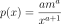
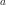
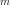
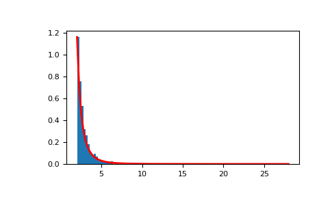

numpy.random.Generator.pareto¶
method
-
Generator.pareto(a, size=None)¶ Draw samples from a Pareto II or Lomax distribution with specified shape.
The Lomax or Pareto II distribution is a shifted Pareto distribution. The classical Pareto distribution can be obtained from the Lomax distribution by adding 1 and multiplying by the scale parameter
m(see Notes). The smallest value of the Lomax distribution is zero while for the classical Pareto distribution it ismu, where the standard Pareto distribution has locationmu = 1. Lomax can also be considered as a simplified version of the Generalized Pareto distribution (available in SciPy), with the scale set to one and the location set to zero.The Pareto distribution must be greater than zero, and is unbounded above. It is also known as the “80-20 rule”. In this distribution, 80 percent of the weights are in the lowest 20 percent of the range, while the other 20 percent fill the remaining 80 percent of the range.
- Parameters
- afloat or array_like of floats
Shape of the distribution. Must be positive.
- sizeint or tuple of ints, optional
Output shape. If the given shape is, e.g.,
(m, n, k), thenm * n * ksamples are drawn. If size isNone(default), a single value is returned ifais a scalar. Otherwise,np.array(a).sizesamples are drawn.
- Returns
- outndarray or scalar
Drawn samples from the parameterized Pareto distribution.
See also
scipy.stats.lomaxprobability density function, distribution or cumulative density function, etc.
scipy.stats.genparetoprobability density function, distribution or cumulative density function, etc.
Notes
The probability density for the Pareto distribution is

where  is the shape and  the scale.
The Pareto distribution, named after the Italian economist Vilfredo Pareto, is a power law probability distribution useful in many real world problems. Outside the field of economics it is generally referred to as the Bradford distribution. Pareto developed the distribution to describe the distribution of wealth in an economy. It has also found use in insurance, web page access statistics, oil field sizes, and many other problems, including the download frequency for projects in Sourceforge [1]. It is one of the so-called “fat-tailed” distributions.
References
- 1
Francis Hunt and Paul Johnson, On the Pareto Distribution of Sourceforge projects.
- 2
Pareto, V. (1896). Course of Political Economy. Lausanne.
- 3
Reiss, R.D., Thomas, M.(2001), Statistical Analysis of Extreme Values, Birkhauser Verlag, Basel, pp 23-30.
- 4
Wikipedia, “Pareto distribution”, https://en.wikipedia.org/wiki/Pareto_distribution
Examples
Draw samples from the distribution:
>>> a, m = 3., 2. # shape and mode >>> s = (np.random.default_rng().pareto(a, 1000) + 1) * m
Display the histogram of the samples, along with the probability density function:
>>> import matplotlib.pyplot as plt >>> count, bins, _ = plt.hist(s, 100, density=True) >>> fit = a*m**a / bins**(a+1) >>> plt.plot(bins, max(count)*fit/max(fit), linewidth=2, color='r') >>> plt.show()
